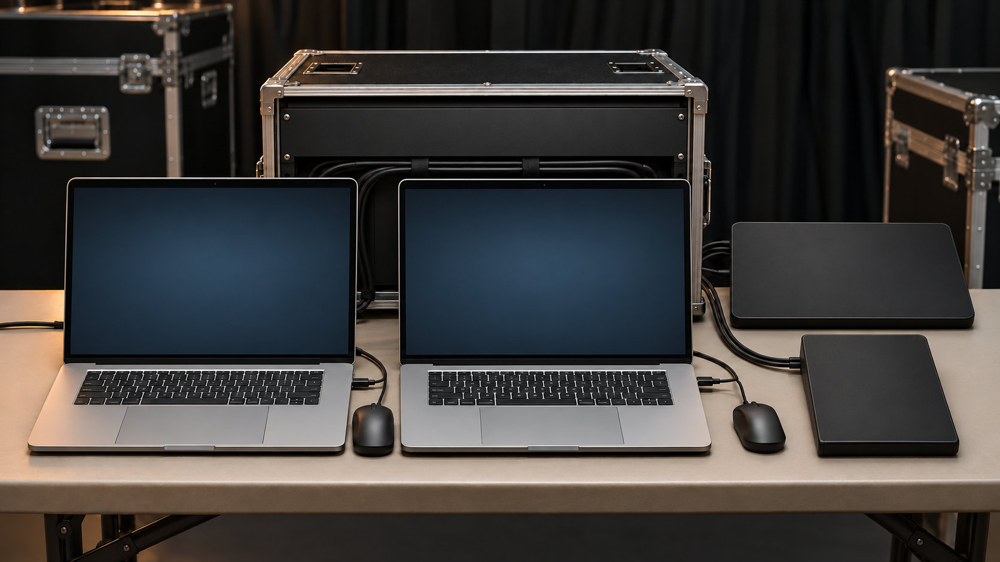

歌詞表示・VTR再生
合図に合わせる。その前に、備える。
案件記録に基づく操作と準備の説明図です。PCごとの用途や信号配線は示していません。
扱う素材は2種類
合図が来ない場合にも備える
MIDI不達を想定し、手動操作のタイミングを事前準備。
障害発生や復旧成功の記録ではなく、本番前の備えです。歌詞表示と、ArenaからのVTR出しを担当しました。
図の見方と使用機材
案件記録にあるMacBook Proは2台です。歌詞とVTRは扱う素材の区別であり、左右のPCに専用の用途を割り当てた図ではありません。
型式は本文の機材一覧に記載しています。操作席の画像は説明用に機器正面を抽象化しており、実機の外観・正確な配線を再現していません。MIDI不達への備えは当該案件の準備内容で、自動切替や無停止運用の保証ではありません。
01 / 画面の構成
歌詞とVTR。違う素材を、同じ進行へ。
PCと操作卓の作業環境。資料にはMacBook Pro、Resolume Arena、FA-9600、AV-HSW10、MIX8が記載されています。
- MacBook Pro
- Resolume Arena
- FA-9600
- AV-HSW10
- MIX8
同じ役割を依頼するときの参考情報
PLAN THE NEXT FIELD
機材と人。
両方から、現場を組み立てる。
ここからは、同種の業務を相談するための一般的な検討例です。
この事例で実際に使った機材・人数・体制を示すものではありません。
機材の役割から考える
映像スイッチャー
複数の映像を切り替える機材の例。映像再生ソフトとは役割が異なります。
機材の役割を見る ↗映像記録・再生機器
再生機器の役割を知る参考。素材・操作方法に応じた別途選定が必要です。
機材の役割を見る ↗特定機種の採用・保有・対応可否を保証するものではありません。実際の構成、電源・支持・適合条件は個別に確認します。
必要なスタッフの役割を考える
歌詞表示・映像再生の担当
素材と進行表を確認し、決められた合図に合わせて操作します。
進行・音声・画面担当
操作の合図、音声の扱い、映像を送る先の担当を共有します。
人数や兼任の可否は、規模・作業時間・運用条件によって変わります。LOTUSの担当範囲は相談時に確認します。
相談前に、押さえたい3点
- 01素材の種類・最終版・順番
- 02切り替えの合図と連絡手段
- 03音声と画面の受け渡し先
03 / YOUR NEXT SHOW
次の現場を、
一緒に具体化する。
すべてが決まっていなくても大丈夫です。
分かっていることから、お聞かせください。
ビジュアルについて
機器正面は抽象化しています。左右PCの用途・型番の実物外観・配線は示しません。素材・合図・備えの図は、案件記録に基づく役割の説明です。
機材の役割も知りたい方へ
以下は機材の役割を知るための参考ページです。この事例の使用機材や、同等品の指定ではありません。
映像を切り替える機材の役割を見る ↗